Ing. Eva Goldšmíd · RE/MAX Partner · 15. 11. 2026 · v2 – ke schválení Frantou (rozhodnutí z 15. 11.: cena, nastěhování, bez Mety)
Žádosti o prohlídku domu B (formulář) a telefonáty Evě. Měříme cenu za poptávku a počet domluvených prohlídek.
Dům: 5+kk, 178 m², pozemek 491 m², bazén 3 × 6 m, garáž 28,7 m², hotovo a zkolaudováno, Praha 6 – Suchdol. Cena 23 490 000 Kč je v textech i na bannerech, nastěhování do 31. 1. 2027 (nikde „hned“).
Reklama vede na cílový web, odkaz zatím [WEB] (pracovně maklerkaeva.cz/suchdol-b). Web se právě dělá a zatím neexistuje.
10 000 Kč Kč celkem
| Kanál | Podíl | Částka | Odhad dosahu |
|---|---|---|---|
| Google vyhledávání | 50 % | 5 000 Kč | ~167 kliknutí |
| Připomínání Display / PMax (bannery) | 20 % | 2 000 Kč | ~4 444 lidí, ~133 kliknutí |
| YouTube film | 20 % | 2 000 Kč | ~2 500–6 667 zhlédnutí |
| Sklik | 10 % | 1 000 Kč | ~67 kliknutí |
5 000 Kč Kč měsíčně
| Kanál | Podíl | Částka | Odhad dosahu |
|---|---|---|---|
| Google vyhledávání | 50 % | 2 500 Kč | ~83 kliknutí |
| Sklik | 25 % | 1 250 Kč | ~83 kliknutí |
| Připomínání Display / PMax (bannery) | 25 % | 1 250 Kč | ~2 778 lidí, ~83 kliknutí |
| Naše sítě (200 makléřů, RE/MAX) – zdarma, mimo rozpočet | 0 % | 0 Kč | zdarma, bez rozpočtu |
| Kampaň | Typ | Komu |
|---|---|---|
| Suchdol B – Google vyhledávání | Vyhledávání Google | Lidé hledající dům v Praze 6, Suchdole, Dejvicích, dům se zahradou nebo bazénem; Praha a Praha-západ |
| Suchdol B – Sklik | Vyhledávání Seznam | Stejná hledání, Praha a Středočeský kraj |
| Suchdol B – YouTube film | YouTube in-stream | Praha a Praha-západ + návštěvníci webu |
| Suchdol B – připomínání (Display / PMax) | Google Display / Performance Max | Návštěvníci stránky, kdo viděl video 50 % |
Odhad: Meta 150 Kč / 1 000 zobrazení, 3 zobrazení na člověka, 1 % prokliků; Google 30 Kč, Sklik 15 Kč za proklik; YouTube 0,3–0,8 Kč za zhlédnutí (odhad). Skutečná čísla ukáže první týden. Display/PMax je odhadnuté stejnou metodou jako dřívější připomínání (150 Kč / 1 000 zobrazení, 3 zobrazení na člověka, 1 % prokliků), je to jen odhad. Kanály teď: Google (vyhledávání, Display/PMax, YouTube) a Sklik; Meta zatím ne.
Každá reklama končí „Je to pro vás, pokud…“ a jedním tlačítkem. Žádné slovo investor ani výnos. „Na přání“ není nikdy „v ceně“.
Genius loci: údolí za domem a dům. „Kdybyste nevěděli, že jste v Praze, nepoznáte to.“
Dům 5+kk, 178 m² s bazénem u rezervace. Cena 23 490 000 Kč, nastěhování do 31. 1. 2027. Je to pro vás, pokud chcete přírodu za plotem a Prahu na dosah. Domluvte si prohlídku.
15 nadpisů (z toho jeden s cenou, 1–2 s nastěhováním do 31. 1. 2027), 4 popisy, 4 odkazy, 4 doplňky; Google je skládá sám. Klíčová slova (fráze/přesná):
"dům Suchdol""rodinný dům Suchdol"[dům Suchdol Praha]"dům u přírody Praha""dům u lesa Praha""dům Praha 6""dům poblíž rezervace Praha"Zahrada s bazénem, 5+kk 178 m², garsonka se vstupem k bazénu.
Dům 5+kk, 178 m², bazén a garáž. Cena 23 490 000 Kč. Nastěhování do 31. 1. 2027. Je to pro vás, pokud chcete z bytu do domu se zahradou a zůstat v Praze 6.
15 nadpisů (z toho jeden s cenou, 1–2 s nastěhováním do 31. 1. 2027), 4 popisy, 4 odkazy, 4 doplňky; Google je skládá sám. Klíčová slova (fráze/přesná):
"dům se zahradou Praha""dům s bazénem Praha""rodinný dům Praha 6""rodinný dům na prodej Praha 6""dům s garsonkou Praha"[dům 5+kk Praha]"dům s garáží Praha 6""dům na prodej Suchdol"3D řez „V ceně“ a „Na přání“, bez cen.
Hotovo a zkolaudováno za 23 490 000 Kč. Nastěhování do 31. 1. 2027, zbytek podle sebe. Je to pro vás, pokud chcete hotový dům a dokončit si ho sami. Podívejte se na 3D řez.
15 nadpisů (z toho jeden s cenou, 1–2 s nastěhováním do 31. 1. 2027), 4 popisy, 4 odkazy, 4 doplňky; Google je skládá sám. Klíčová slova (fráze/přesná):
"zkolaudovaný dům Praha""hotový dům Praha 6""dům s rekuperací Praha""dům s podlahovým topením Praha""chytrý dům Loxone Praha""dům k nastěhování Praha""dům k nastěhování Praha 6"Dejvice 12 min, letiště 15 min, příroda hned za domem.
Dům v Suchdole: Dejvice za 12 minut, letiště za 15 a přírodní rezervace hned za domem. Je to pro vás, pokud chcete mít město na dosah a přírodu za plotem. Domluvte si prohlídku.
15 nadpisů (z toho jeden s cenou, 1–2 s nastěhováním do 31. 1. 2027), 4 popisy, 4 odkazy, 4 doplňky; Google je skládá sám. Klíčová slova (fráze/přesná):
"dům Dejvice""dům Praha 6 Dejvice""bydlení Suchdol""dům Praha-Suchdol""dům u letiště Praha""dům Praha 6 u přírody"[rodinný dům Praha 6]Family home with garden and pool in Prague 6. Bez slov investor a výnos.
Family home 5+kk, 178 m², garden and pool. CZK 23,490,000. Move in by 31 Jan 2027. Is it for you? If you want a family home with garden and pool in Prague 6. Book a viewing.
15 nadpisů (z toho jeden s cenou, 1–2 s nastěhováním do 31. 1. 2027), 4 popisy, 4 odkazy, 4 doplňky; Google je skládá sám. Klíčová slova (fráze/přesná):
"house for sale Prague 6""family house Prague with pool""house with garden Prague""villa Prague 6 for sale""house Suchdol Prague"[house for sale Prague 6]"buy house Prague 6"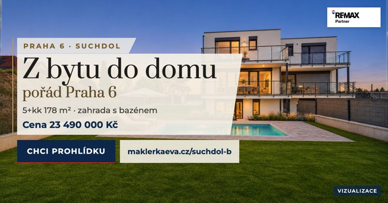
A · Zahrada s bazénem – soumrak
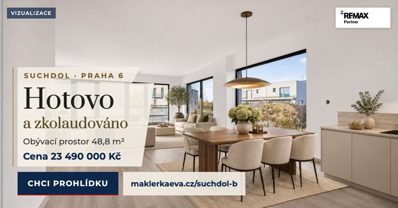
B · Obývák
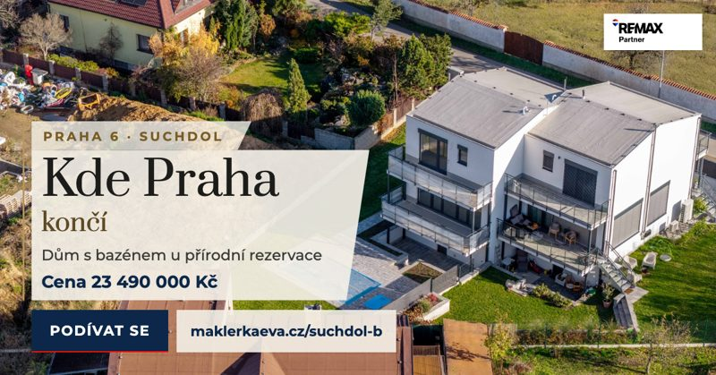
C · Údolí a dům z dronu
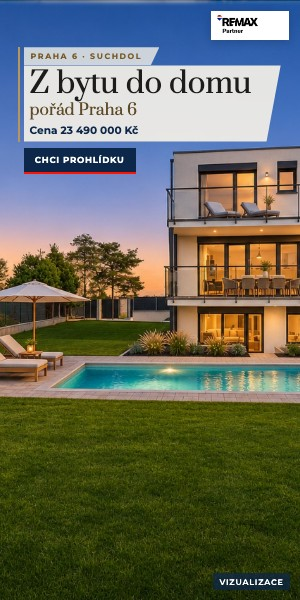
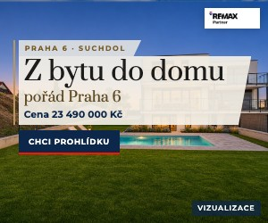
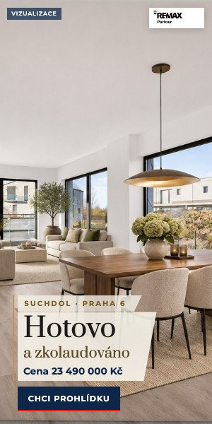
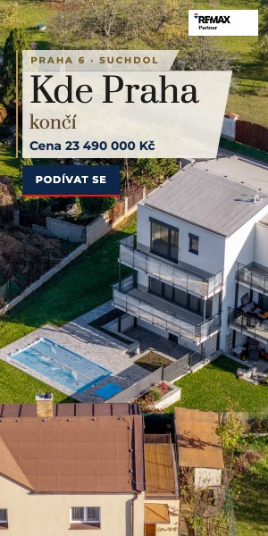
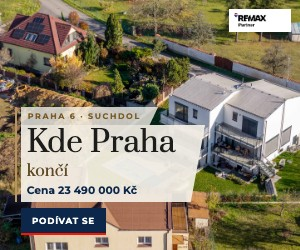
Všech 8 velikostí je ve složce bannery/ a v přehledu _prehled. Vizualizace mají štítek „Vizualizace“. Na bannerech je cena (u 320×100 ne, je tam málo místa). Obrazy se přegenerují jedním během, až Franta dokončí fotky z dronu a schválí se kolo 2.
S1 Kde Praha končí"dům Suchdol""rodinný dům Suchdol"[dům Suchdol Praha]"dům u přírody Praha""dům u lesa Praha""dům Praha 6""dům poblíž rezervace Praha"
S2 Z bytu do domu, pořád Praha 6"dům se zahradou Praha""dům s bazénem Praha""rodinný dům Praha 6""rodinný dům na prodej Praha 6""dům s garsonkou Praha"[dům 5+kk Praha]"dům s garáží Praha 6""dům na prodej Suchdol"
S3 Hotovo a zkolaudováno, zbytek podle vás"zkolaudovaný dům Praha""hotový dům Praha 6""dům s rekuperací Praha""dům s podlahovým topením Praha""chytrý dům Loxone Praha""dům k nastěhování Praha""dům k nastěhování Praha 6"
S4 Město na dosah"dům Dejvice""dům Praha 6 Dejvice""bydlení Suchdol""dům Praha-Suchdol""dům u letiště Praha""dům Praha 6 u přírody"[rodinný dům Praha 6]
S5 Anglicky (expati)"house for sale Prague 6""family house Prague with pool""house with garden Prague""villa Prague 6 for sale""house Suchdol Prague"[house for sale Prague 6]"buy house Prague 6"
pronájemnájempronajmoutchatachalupapozemekbytdražbaexekucezdarmahotelubytováníairbnbkalkulačkabrigádaprojekt domustavba domurentrentalapartmentjob
Fráze v uvozovkách, přesná shoda v hranatých závorkách. Praha 6, Suchdol, Dejvice a obecné „dům se zahradou / s bazénem Praha“.
UTM: utm_source={google|sklik|youtube} · utm_medium={cpc|display|video} · utm_campaign=suchdol-b-{start|zima} · utm_content={skupina S1–S5}-{varianta A/B/C}
GA4 G-RLXGK3PCZ0 je v eva-goldsmid/mereni.js; GTM a konverze (formulář, telefon, video 50 %) na cílovém webu zatím nejsou – doplnit a ověřit v Preview až bude web (skill web-reklamy). Meta Pixel až s Metou.
Platba: karta majitele, nebo přefakturace skutečných nákladů (dle domluvy s p. Sládkem). Kampaně se zakládají jako PAUSED / koncept, spouští se až na Frantovo „spusť“.
Franta 15. 11.: Meta Business zatím dělat nebudeme. Podklady zůstávají hotové a nesmazané (texty ve skupinách → meta, složka meta/).
Suchdol B – Meta + Instagram: 5 skupin sdělení = 5 sad reklam, 4:5 statik, carousel 6 karet, reel (až bude); u angličtiny jazyk angličtina. Meta + Instagram 55 % z ~10 000 Kč (původní návrh); Připomínání na Meta 40 % z 5 000 Kč/měs. (původní návrh).
Původní návrh rozdělení Meta mezi skupiny: S1 25 % (1 375 Kč) · S2 25 % (1 375 Kč) · S3 20 % (1 100 Kč) · S4 15 % (825 Kč) · S5 15 % (825 Kč). Meta Business: Eva zatím nemá – založit, až se Meta rozběhne (Eva přihlášení, Franta správa). Meta Pixel doplnit do měření až s Metou.
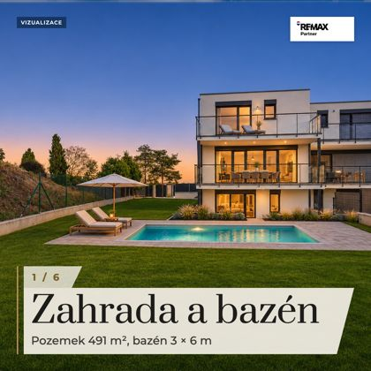
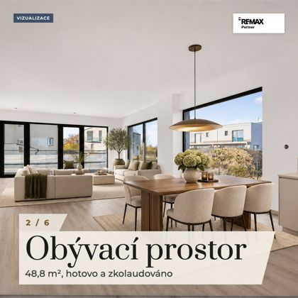
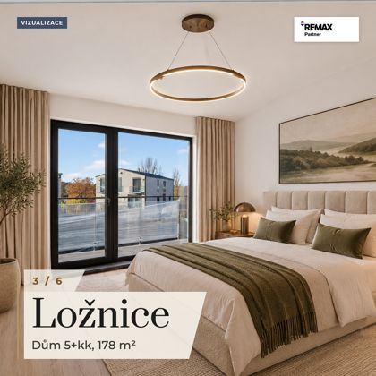
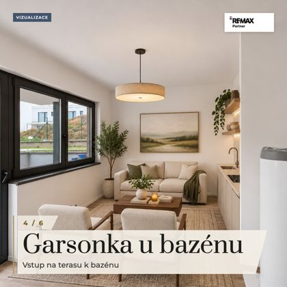
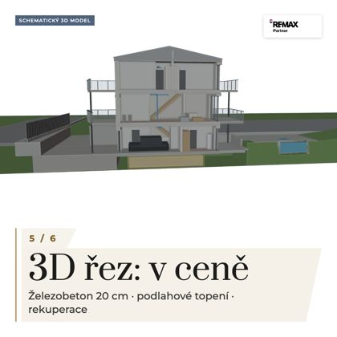
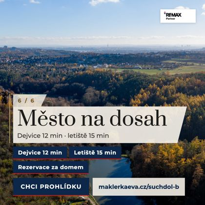
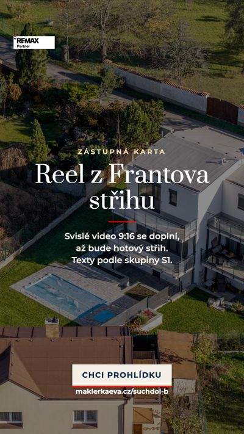
Zástupná karta. Reel se vezme z Frantova střihu, až bude hotový. YouTube: film 16:9 jako in-stream v Praze 6 a Praze-západ.
Kdybyste nevěděli, že jste v Praze, nepoznáte to. Je to pro vás, pokud chcete přírodu za plotem. … více
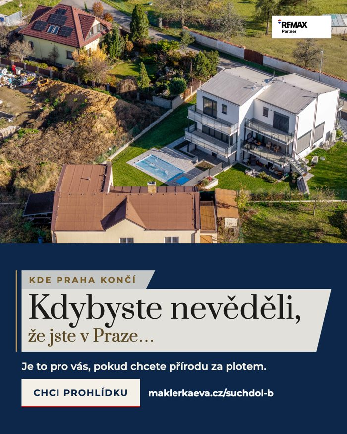
Tlačítko v kreativě: „Chci prohlídku“, v reklamě Meta: „Zjistit více“. Další texty jsou v plan.json.
Zahrada s bazénem, 5+kk 178 m² a pořád Praha 6. Je to pro vás, pokud chcete z bytu do domu a zůstat ve městě. … více
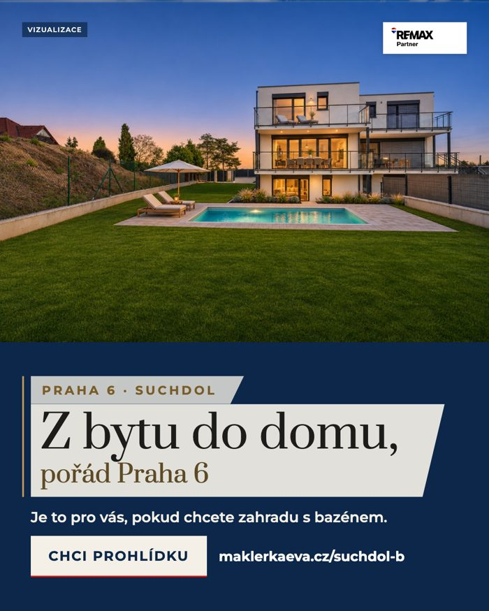
Tlačítko v kreativě: „Chci prohlídku“, v reklamě Meta: „Zjistit více“. Další texty jsou v plan.json.
Železobeton, podlahové topení a rekuperace v ceně, zbytek na přání. Je to pro vás, pokud chcete dům dokončit podle sebe. … více
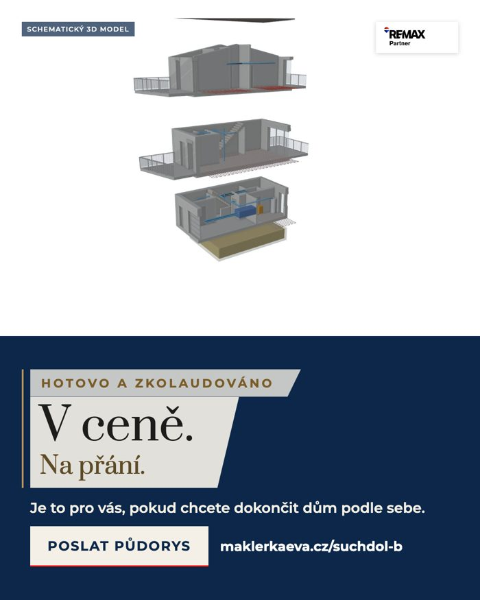
Tlačítko v kreativě: „Poslat půdorys“, v reklamě Meta: „Zjistit více“. Další texty jsou v plan.json.
Dejvice za 12 minut, letiště za 15, příroda hned za domem. Je to pro vás, pokud chcete mít všechno blízko. … více
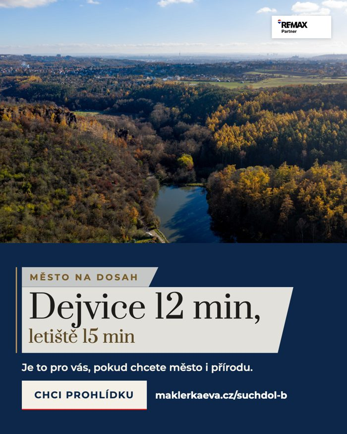
Tlačítko v kreativě: „Chci prohlídku“, v reklamě Meta: „Zjistit více“. Další texty jsou v plan.json.
Family home with garden and pool in Prague 6. Is it for you? If you want space, nature and the city 12 minutes away. … více
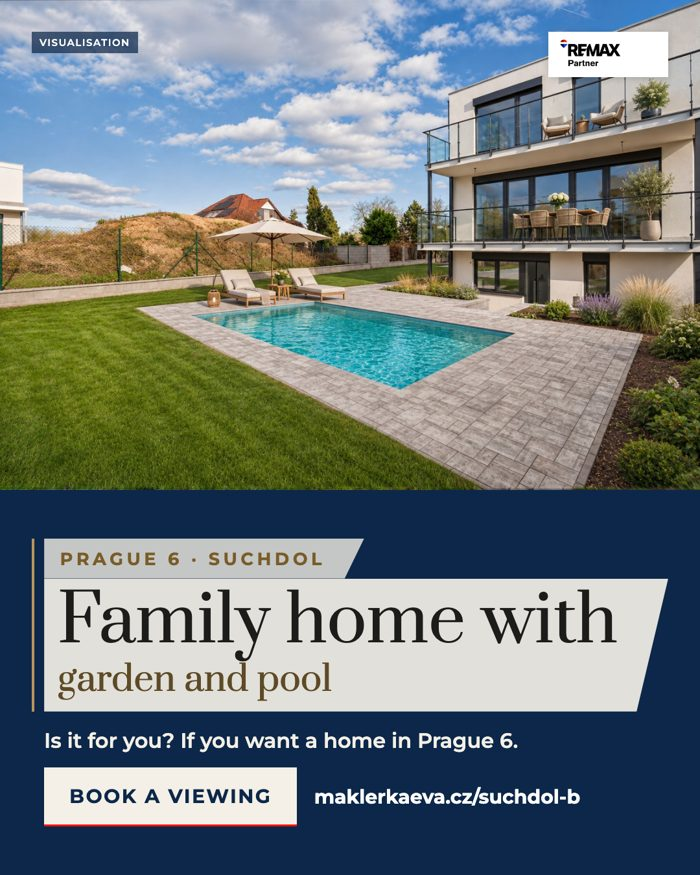
Tlačítko v kreativě: „Book a viewing“, v reklamě Meta: „Learn more“. Další texty jsou v plan.json.